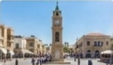
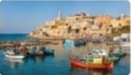
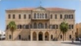
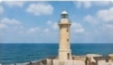
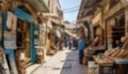
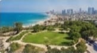
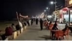

يافا.. عروس البحر وعراقة التاريخ
"رحلة مصورة شاملة عبر تاريخ وثقافة ومعالم يافا، من الميناء العتيق إلى الأحياء الحديثة."

ساحة الساعة: نبض المدينة
القلب النابض لمدينة يافا؛ ساحة تاريخية مركزية تتألق ببرج الساعة الشهير، لتشكل ملتقى أساسياً لأهل المدينة وزوارها، وشاهداً على عراقة الماضي والحاضر.

ميناء يافا العتيق: بوابة الشرق
بوابة البحر الأبيض المتوسط؛ أحد أقدم الموانئ التاريخية في العالم، وقف ثابتاً شامخاً على مر العصور ليشهد على حركات التجارة العالمية والتقاء الحضارات.

مبنى السرايا: عراقة الحكم
مركز الإدارة والحكم العثماني القديم في يافا؛ تحفة معمارية هندسية ضخمة تعبر عن الأصالة والفخامة، وتقدم شاهداً حياً على المكانة السياسية والإدارية التي تميزت بها المدينة عبر التاريخ.
كنيسة القديس بطرس: صرح عريق
صرحٌ ديني ومعماري بارز يرتفع فوق تلة يافا القديمة؛ تمتاز ببرجها الشامخ ولونها الوردي الجذاب، وتعد من أهم المعالم التاريخية التي تعكس التنوع الثقافي والروحي للمدينة.
حكاية أزقة وأسواق: روح يافا القديمة
"هنا يتجسد التراث اليافاوي في أبهى صوره؛ صروح دينية عريقة، ممرات حجرية ضيقة تختزن الذكريات، وسوقٌ يجمع التحف والنوادر ليروي قصة مدينة حية لا تموت."

المنارة القديمة: دليل البحارة
صرحٌ تاريخي شامخ يشرف على شاطئ يافا، وقف دليلاً ومرشداً للسفن في عرض البحر، ليضيء عتمة الليل للبحارة ويرسم طريق العودة إلى الميناء العتيق.
مسجد المحمودية: عمارة شامخة
أكبر مساجد يافا الأثرية؛ تحفة معمارية إسلامية فريدة، تمتاز بأعمدتها الشامخة وتصميمها العريق المحاذي لساحل البحر، لتبقَى شاهدة على الهوية العربية للمدينة.

سوق الروبابيكيا: تحف ونوادر
أحد الأسواق الشعبية النابضة في يافا؛ يعرض بين زواياه عبق الماضي من خلال التحف القديمة، الأثاث العتيق، والقطع النادرة التي تروي ذكريات وتاريخ أهل فلسطين.
البلدة القديمة: أزقة ضيقة
قلب المدينة النابض بالتاريخ؛ تتميز بأزقتها الحجرية الضيقة ومبانيها الأثرية العتيقة، التي تختزل تفاصيل العمارة والإرث الثقافي الأصيل عبر العصور.
يافا اليوم: نبض الحياة والملتقى
"بين زرقة الشواطئ الساحرة وخضرة الحدائق الغناء، تلتقي أصالة أهل يافا وكرمهم بأجواء أسواقها الحية التي لا تنام، لترسم معاً لوحة يومية مفعمة بالبهجة والتواصل."

حديقة القمة: إطلالة بانورامية
بقعة خضراء ساحرة تتربع على أعلى تلة في يافا القديمة، تمنح الزائرين إطلالة بانورامية خلابة تجمع بين زرقة البحر المتوسط وأفق مدينة يافا التاريخية، لتشكل ملاذاً مثالياً للاسترخاء وتأمل جمال الطبيعة وعراقة المكان.
شواطئ يافا: واحة الاسترخاء
لوحة طبيعية ساحرة يمتزج فيها هدوء الأمواج بنقاء الرمال الذهبية، لتشكل ملاذاً مثالياً للاستجمام والراحة وتأمل سحر غروب عروس البحر
أهل يافا: كرم وتراث
عنوانٌ للأصالة والشهامة؛ عائلاتٌ عريقة تحرس الهوية اليافاوية، وتجسّد قيم الكرم والضيافة والترابط الإنساني في أبهى صورها.

أسواق لا تنام
شرايين تنبض بالحياة والحركة؛ أسواق يافا العريقة تجمع بين عبق التاريخ وحيوية الحاضر، لتمنح الزوار تجربة تسوق ساحرة ومستمرة طوال الليل والنهار.